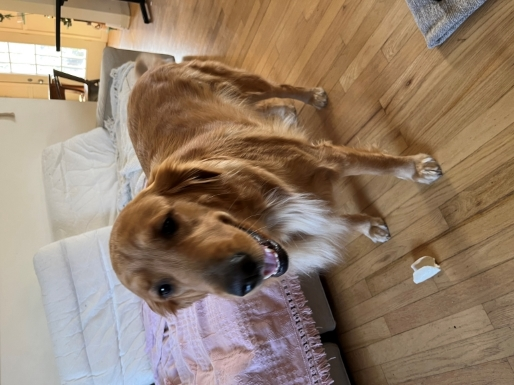
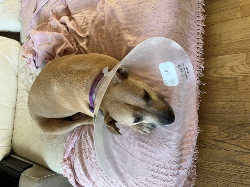
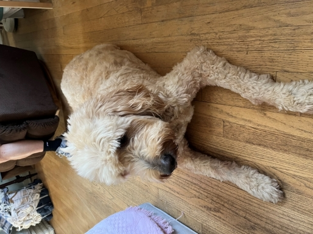

Kaggle Cats & Dogs Challenge
Over Thanksgiving break in 2022, I had felt that I was behind on both my ability to program in Python and my
knowledge and understanding of Machine Learning (ML) concepts. I decided that I would do a basic tutorial of
TensorFlow and then apply that to create a Neural Network that can distinguish cats and dogs, as part of an old
Kaggle challenge.
I programmed a simple LeNet, a type of
Convolutional Neural Network. For it's simplicity, LeNets are incredibly efficient and accurate, and my
model became around 98.5% accurate with the training data. For tests, I used photos of my 3 dogs:



Hazel (left) was detected as a Dog with around 90% confidence. Most of the test images looked like dogs sitting
down or side-profiles of them standing.
Hope (center) was detected as a Dog with around 55% confidence. I assume that this inaccuracy is due to her cone.
Xavi (right) was detected as a Dog with >99.999% confidence. The human leg in the picture likely has a miniscule impact,
since more humans were in pictures of dogs.
One of my biggest takeaways from this project is that running your model into the ground with tens of thousands
of training images over many iterations doesn't necessarily produce better performance for test images. There is
much discussion about training data for ML-based systems having certain
biases that are reflected in negative outcomes for marginalized groups.
What I should've done is ask everyone I know to email me a photo of their cats/dogs (try to get equal numbers) and
then I could've gotten a far more diverse sample set then what Kaggle provided 9 years ago.
Regardless, it is quite possible that the code I wrote transported into the ancient past could've won this challenge.
However, TensorFlow did not exist when the challenge was run, and research on Convolutional Neural Networks was its
infancy.
The code that I used to generate and test the model can be found on my Github:
https://github.com/Bmeshanko/cats-and-dogs-challenge